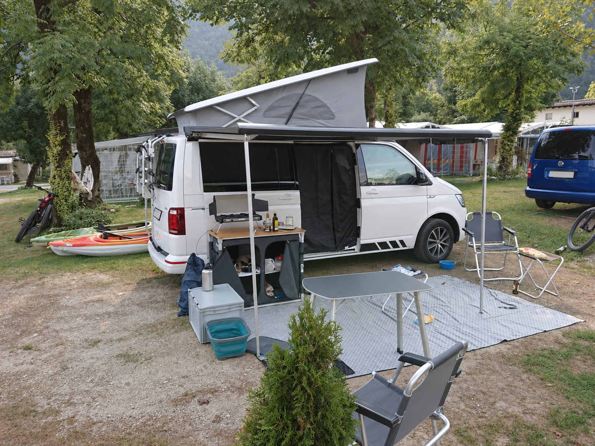
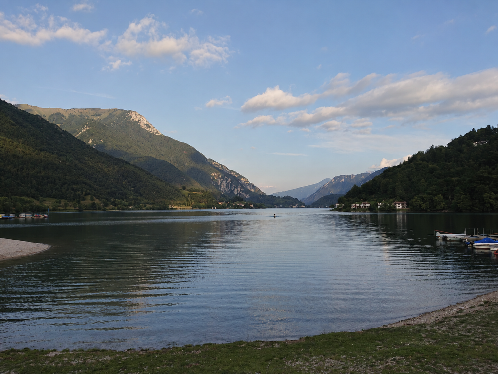
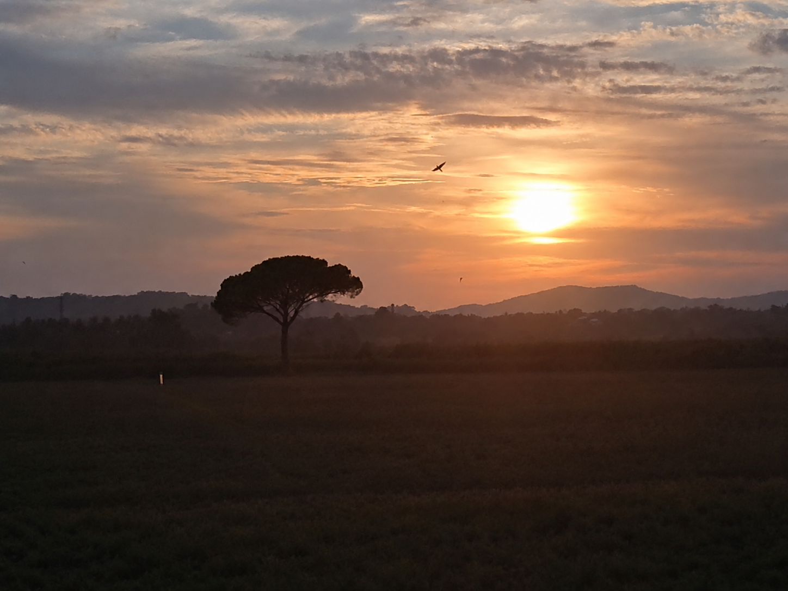
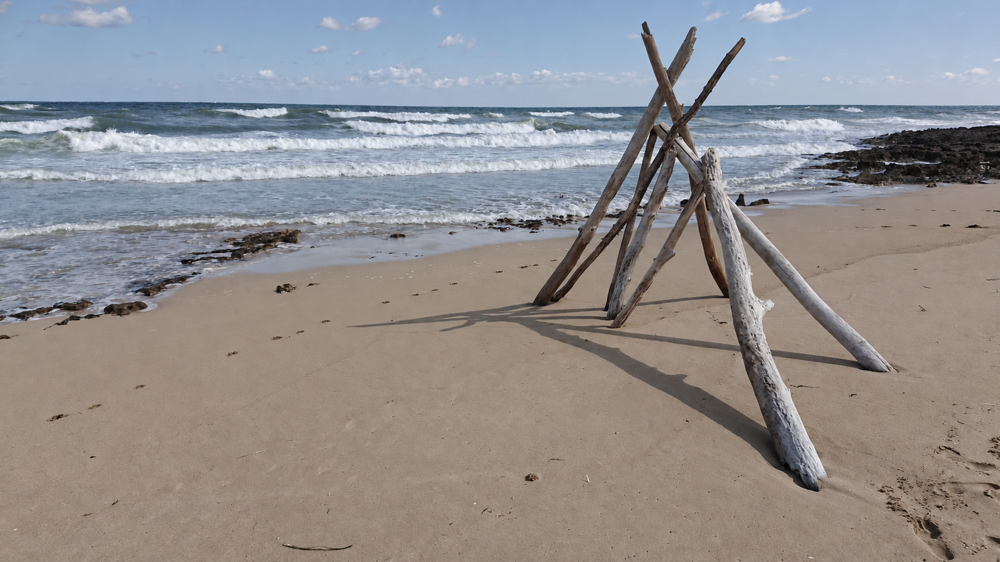
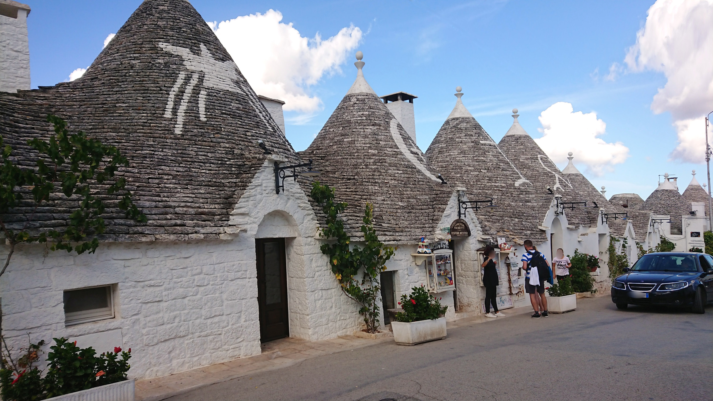
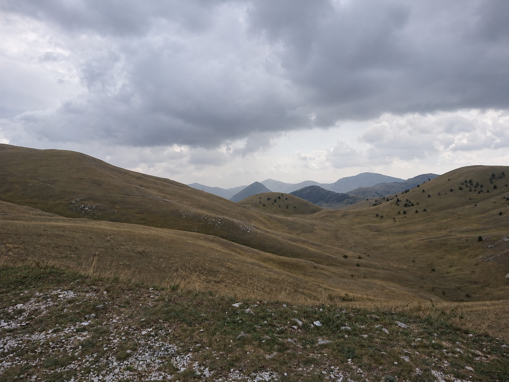

Am Lago di Ledro beginnt unsere erste große Reise mit unserem Sohn. Fünf Wochen liegen vor uns: vom Bergsee durch die Toskana, entlang der Amalfiküste bis weit in den Süden. Sabine, Helmut, unser Sohn und Julie reisen im California. Die gemeinsame Zeit ist der besondere Höhepunkt dieser Runde; die Orte geben ihr ihre unterschiedlichen Farben.
Am Ledrosee beginnt die Familienreise
Am 2. September 2021 sind wir am Lago di Ledro. Wasser und Berge bilden den Anfang unserer Italienrunde. Zum ersten Mal ist unser Sohn auf einer solchen Reise dabei. Fünf Wochen geben uns Raum für das gemeinsame Unterwegssein und für eine Route, die weit über diesen ersten See hinausführen wird.
Am 4. September fahren wir mit dem Mountainbike zum Rifugio al Faggio. Nach den Kilometern im California sind wir wieder selbst in Bewegung, mitten in der Berglandschaft rund um den See. Der Wechsel vom Van aufs Rad wird uns auch auf den nächsten Etappen begleiten.


Durch die Hügel der Toskana
Über Mugello Verde am 6. September und I Chiari am nächsten Tag erreichen wir am 9. September das Val d’Orcia. Die Berge des Ledrosees liegen hinter uns, jetzt begleiten uns die Hügel der Toskana. Am 11. September geht es weiter zu den Crete Senesi und nach Massa Marittima. Mit dem California haben wir unser Zuhause zwischen diesen Orten dabei.
Auch hier holen wir das Mountainbike heraus. Besonders bleibt eine Abfahrt durch einen Canyon in Erinnerung. Auf dem Trail richtet sich der Blick auf den Boden vor dem Vorderrad. Die nächste Etappe nach Süden kann warten, solange wir noch auf diesem Weg unterwegs sind.

An der Amalfiküste
Am 13. September erreichen wir Vico Equense, am 16. September sind wir an der Amalfiküste. Nach den Hügeln der Toskana liegt wieder das Meer vor uns. Auf dieser langen Runde haben wir Zeit, an den Küstenorten anzuhalten und für einige Tage dort zu bleiben.
Eine Zitrone aus Sorrento bleibt als kleine Erinnerung an diesen Abschnitt. Zwischen den großen Landschaften sind es auch solche Dinge, die wir mit einem Ort verbinden. Zur Reise gehören die weiten Blicke ebenso wie das, was uns unterwegs im Kleinen begegnet.
Tropea und die Abende in Matera
Am 20. September kommen wir nach Tropea. Die Häuser stehen hoch über der Küste, darunter liegt das Meer. Von unserem ersten Bergsee aus sind wir weit nach Süden gereist. Der California und die gemeinsame Zeit mit unserem Sohn und Julie verbinden auch diesen Aufenthalt mit den vorherigen Tagen.
Am 21. und 22. September besuchen wir Matera. Die Küste tritt zurück, die Stadt bestimmt unsere Wege. Am Abend färbt sich der Himmel kräftig. Nach den Tagen am Meer kommt ein anderer Eindruck hinzu, und unsere Familienreise wächst um einen weiteren Ort.
Trulli und die Rückkehr ans Wasser
Am 22. September stehen Sabine und Julie vor den Trulli von Alberobello. Ihre konischen Dächer geben dem Ort ein eigenes Bild. Anschließend fahren wir weiter nach Il Pilone und kommen wieder ans Wasser. Ostuni und Vieste gehören zu den nächsten Etappen am 25. September: weiße Häuser, Küste und Zeit an einer Bucht.
Das Wasser zieht sich durch unsere Art zu reisen. Unser Grabner Riverstar gehört zur Ausrüstung im Van und zu den Landschaften, die wir auch vom Kajak aus kennenlernen. Für uns ergänzt es die Wege zu Fuß und mit dem Mountainbike: draußen weiterentdecken, nachdem wir mit dem California angekommen sind.


Vom Wald in die offenen Berge
In der Foresta Umbra auf dem Gargano umgibt uns nach den Küstenorten wieder Wald. Am 30. September erreichen wir Campo Imperatore. Offene Bergflächen liegen vor uns, Hänge ziehen sich am Horizont entlang. Zum Ende der Runde kehren wir in die Berge zurück, in eine andere Landschaft als am Ledrosee.
Später verbringen wir noch einmal Zeit am Strand. Julie ist mit nassem Fell bei uns, das Meer liegt vor uns. Bald fahren wir nach Hause. Bergsee, Toskana, Amalfiküste, Trulli und Campo Imperatore haben diese fünf Wochen geprägt. Was sie für uns besonders macht, ist die erste große Reise mit unserem Sohn: so viel gemeinsame Zeit, während sich draußen die Landschaft immer wieder verändert.
